← Back to the Decision Lab page
This page is the record of how the Decision Lab page was made with Claude (Claude Code). It has two parts:
The chat is in Spanish because Sebas wrote to Claude in Spanish.
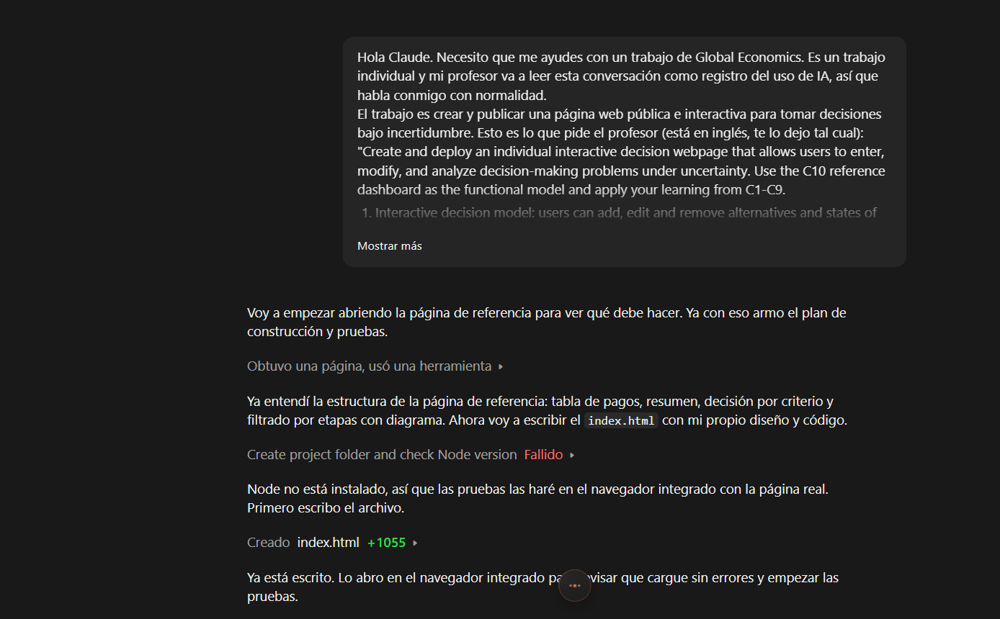
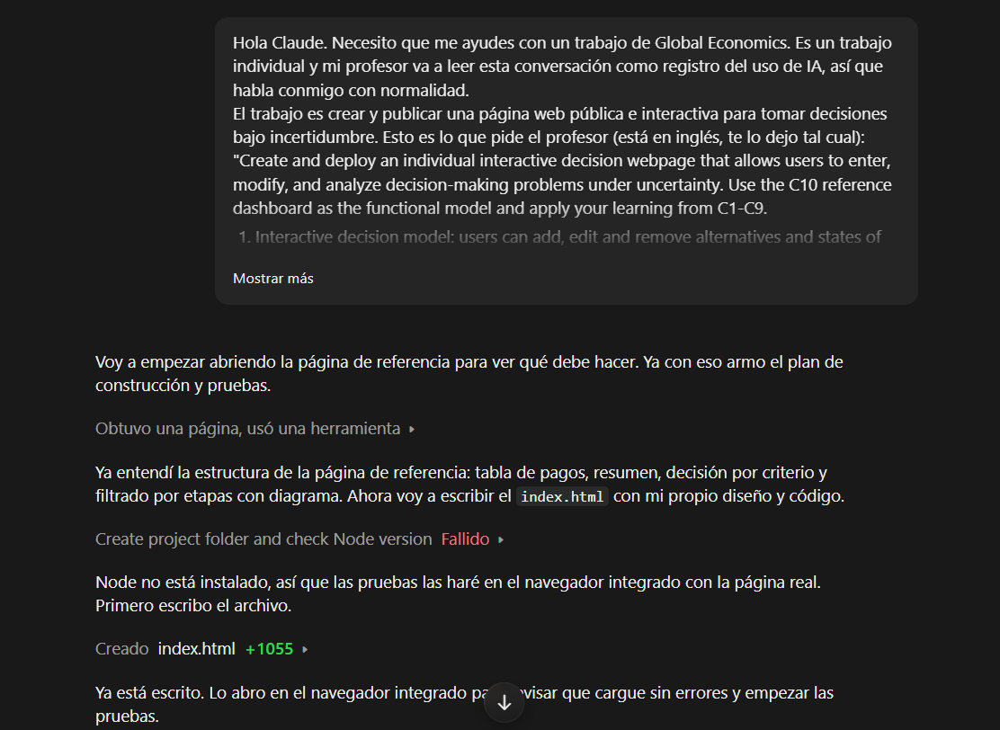
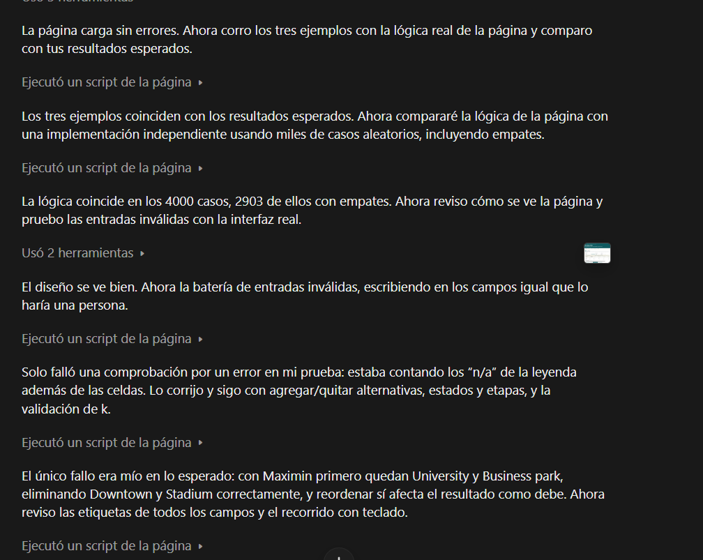
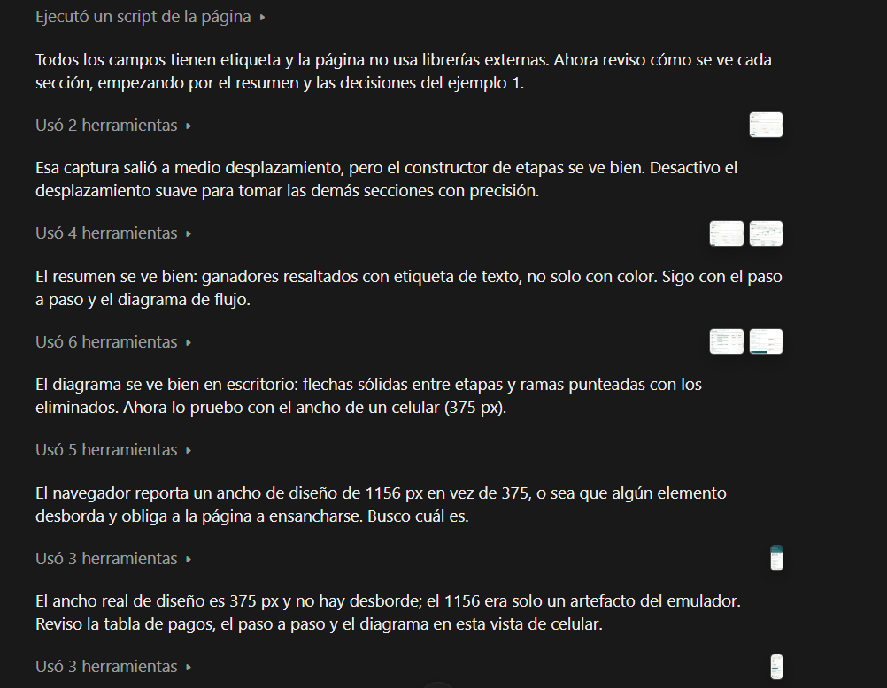
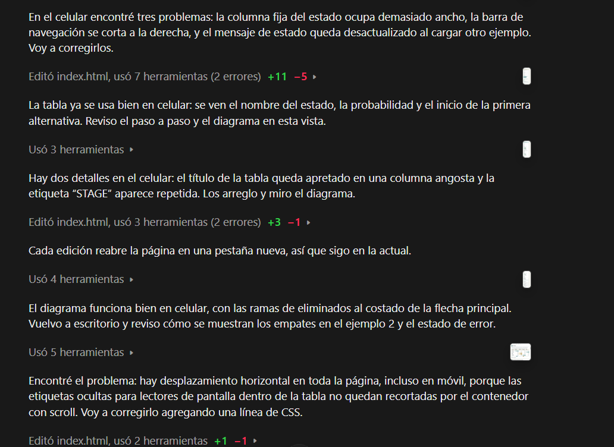
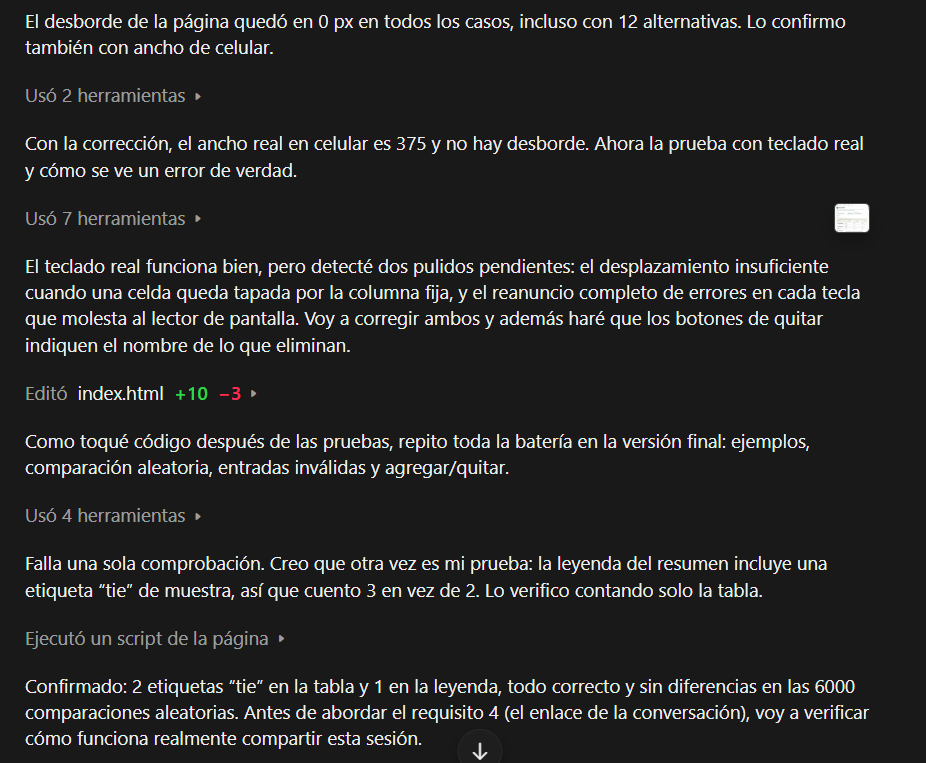
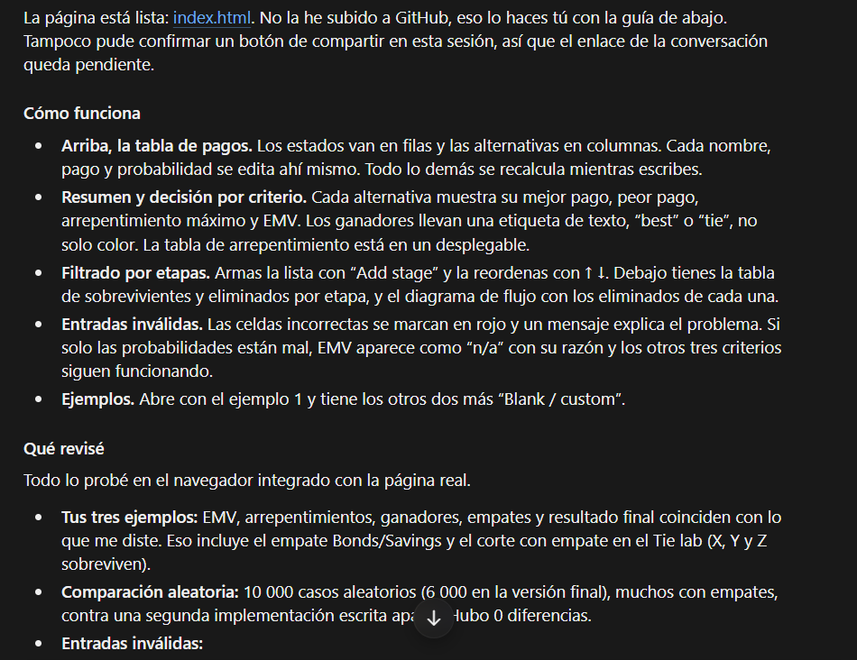
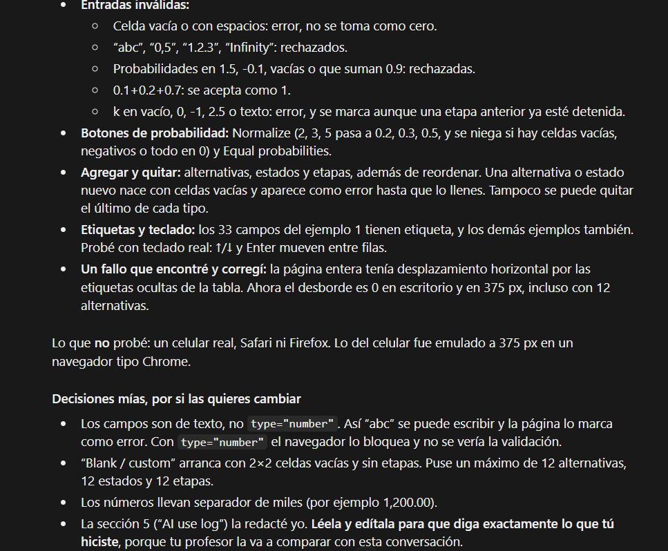
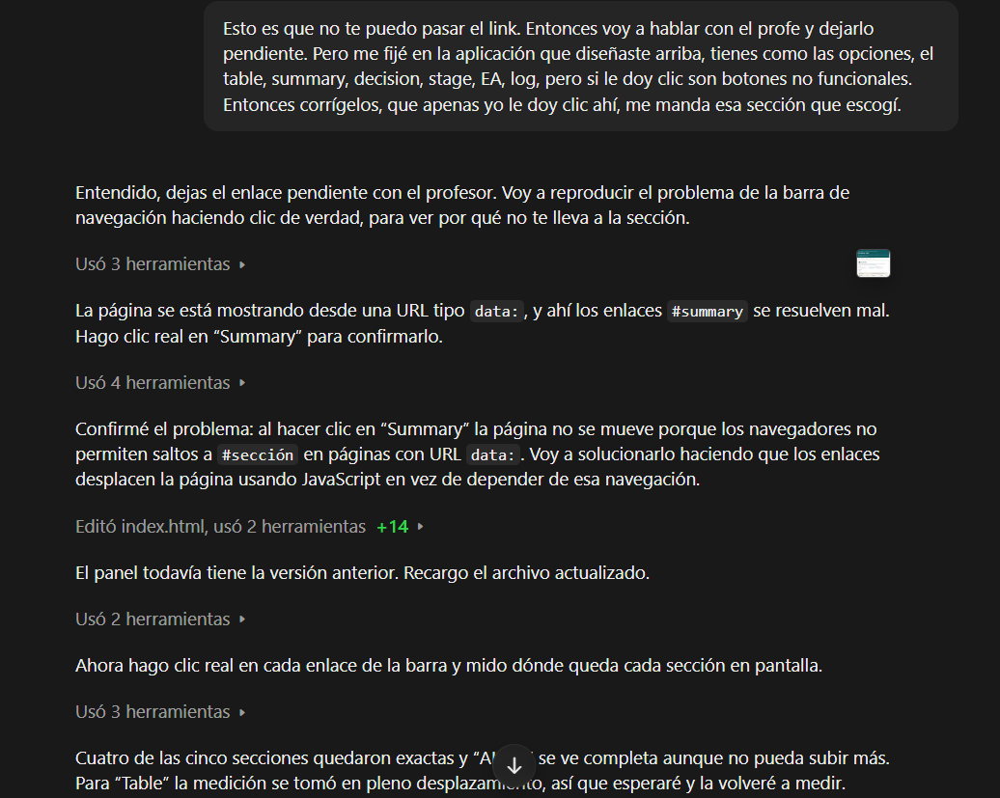
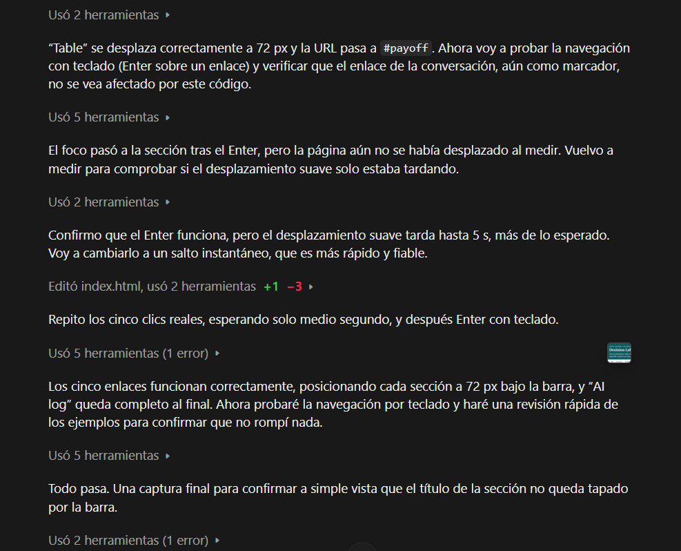
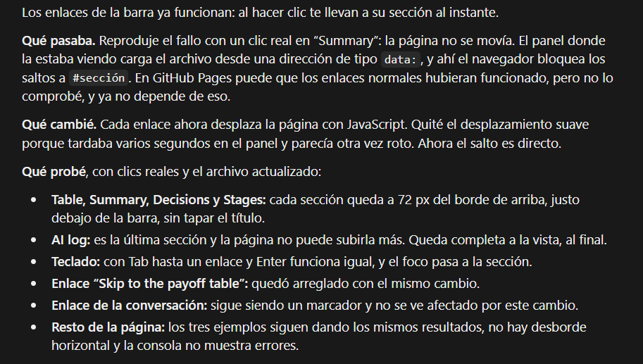